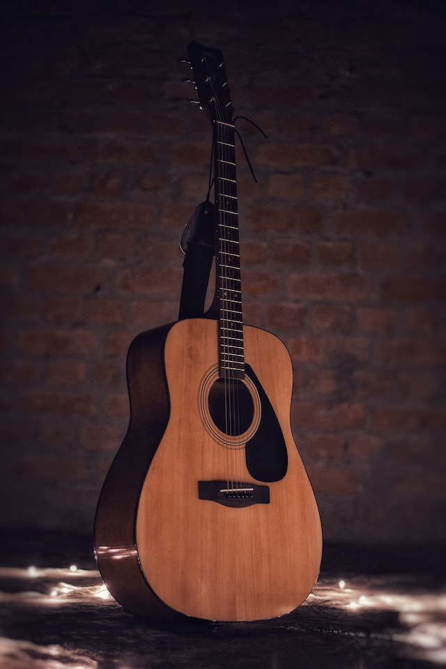
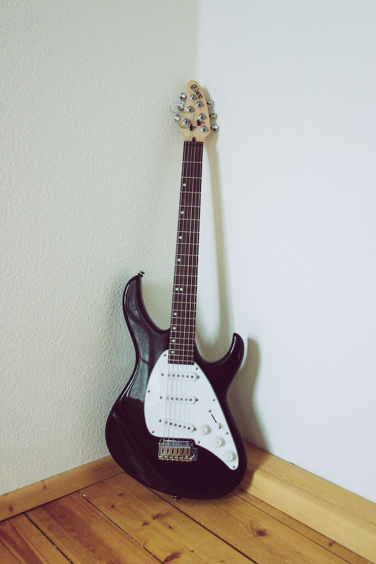
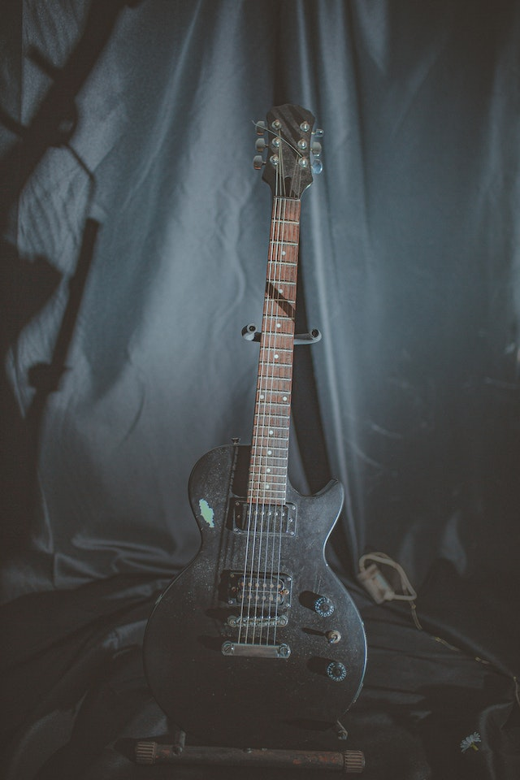

At Handcrafted Harmonies, we celebrate the artistry and craftsmanship of handmade electric guitars. Our website is a haven for guitar enthusiasts, collectors, and musicians who appreciate the unique beauty and soulful sound that can only come from a lovingly crafted instrument.
Discover the Passion:
Our passion for handmade electric guitars runs deep. We believe that every guitar has a story to tell, and each one is an individual work of art. Our website is dedicated to showcasing the talents of luthiers from around the world who pour their heart and soul into creating exceptional guitars.
Explore the Artistry:
Prepare to be captivated as you explore the artistry behind these magnificent instruments. From the selection of exquisite tonewoods to the meticulous shaping of the body, each step of the guitar-making process is infused with expertise and creativity. We delve into the world of hand-carved necks, flawless fretwork, and custom pickups, offering insights into the techniques that make these guitars truly exceptional.
Meet the Master Luthiers:
Our website takes you behind the scenes, introducing you to the master luthiers who dedicate their lives to their craft. Through exclusive interviews and profiles, you'll gain a deeper understanding of their inspirations, challenges, and the philosophy that drives their work. These talented artisans are the backbone of the handmade guitar industry, and we are honored to share their stories.
Immerse Yourself in Sound:
Handmade electric guitars are renowned for their tonal brilliance and unique character. Whether you're into blues, rock, jazz, or any other genre, our website is your gateway to exploring the rich and diverse sounds these instruments produce. We feature sound samples, videos, and detailed descriptions to help you find the perfect guitar that matches your musical style and personality.
Connect with the Community:
At Handcrafted Harmonies, we believe that a vibrant community is at the heart of any passion. Our website provides a platform for guitar enthusiasts, collectors, and musicians to connect, share their experiences, and learn from one another. Join our forums, engage in discussions, and immerse yourself in the camaraderie of fellow guitar lovers.
Indulge in the Beauty:
We invite you to lose yourself in the visual feast that is our gallery of handmade electric guitars. Feast your eyes on the stunning figured tops, intricate inlays, and impeccable finishes. Our high-resolution images capture every exquisite detail, ensuring you can appreciate the craftsmanship from the comfort of your screen.
Whether you're a seasoned guitarist, a collector, or simply someone who appreciates the artistry and soulful sound of handmade electric guitars, Handcrafted Harmonies is your definitive online destination. Join us on a journey through the world of these extraordinary instruments and discover the magic that lies within every string.
Our Products


